開発環境の構築手順 (NetBeans編)
※ 2015年11月時点の情報です。バージョンや URL など更新・変更されている可能性があります。
参考：NetBeans IDE 8.1のインストール手順 (https://netbeans.org/community/releases/81/install_ja.html)
Java 8 (JDK)
※ 既にインストール済の場合は、省略可
http://www.oracle.com/technetwork/java/javase/downloads/index.html
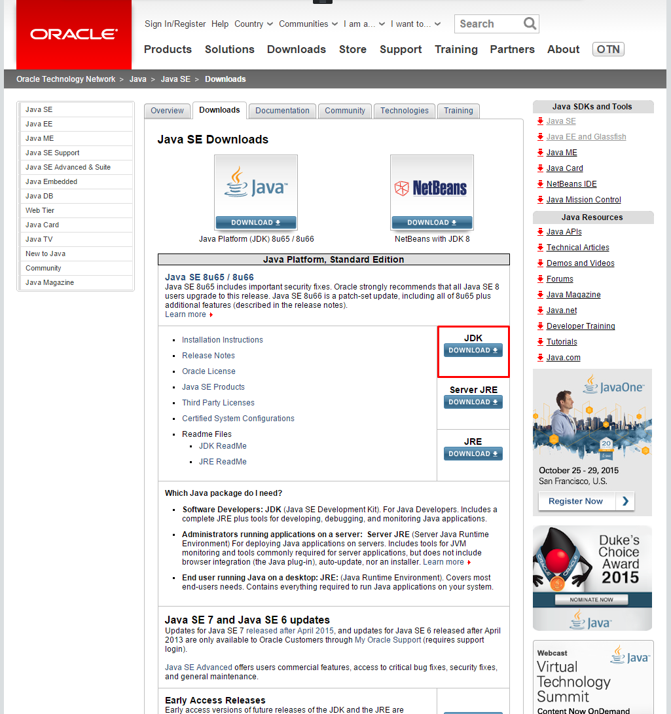
最新版をダウンロード。「Accept License Agreement」にチェックを入れて、自分のOSに応じて一つ選択
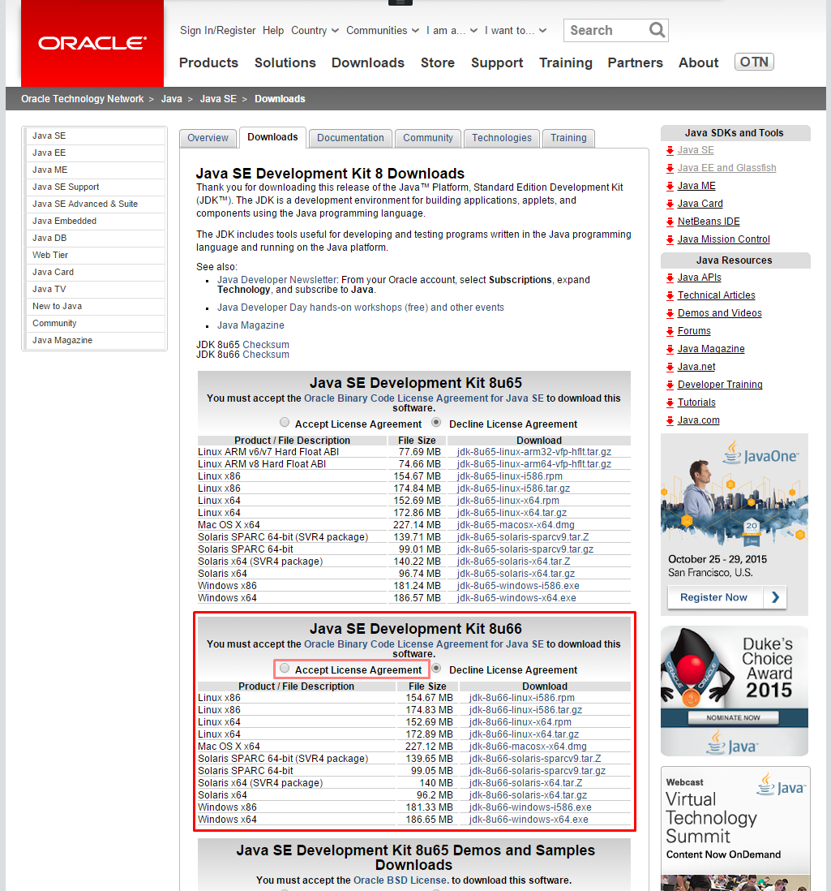
ダウンロードが完了したら、インストーラを起動
※ Windows の場合、デフォルトのインストール先が Program Files 配下になっているが、パスに空白が含まれるのを避けたほうがよい。推奨は C:\opt\Java\jdk1.8.0_xx\
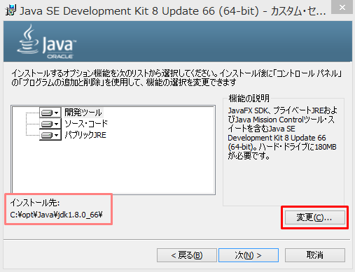
続いて JRE(Java実行環境)のインストールが始まります。
※ Windows の場合、デフォルトのインストール先が Program Files 配下になっているが、パスに空白が含まれるのを避けたほうがよい。推奨は C:\opt\Java\jre1.8.0_xx\
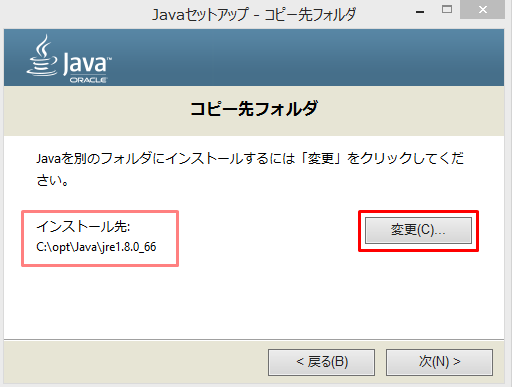
NetBeans
2015年11月時点で最新バージョンは 8.1。
zip 形式でダウンロードされるので適当な場所へ解凍。(Windows の場合、こだわりが無ければ推奨は C:\opt\ の下)
https://netbeans.org/downloads/
Java EE 版 をダウンロード (約190 MB)
※ IDE の言語は任意。ここでは日本語。 ※ プラットフォームはご使用の PC のOSに応じて選択。
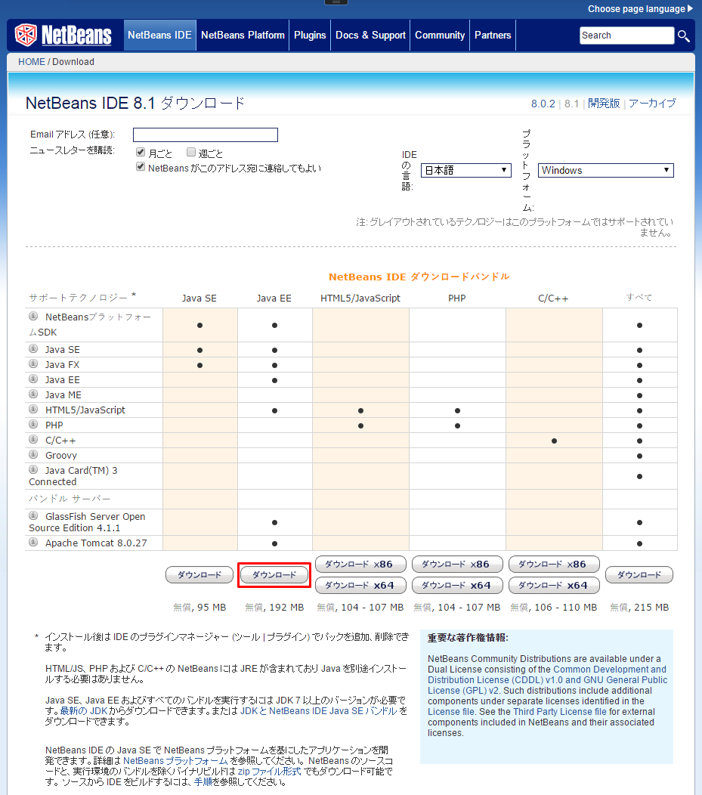
インストーラを起動
- IDE とともにインストールするアプリケーションサーバーは GlassFissh Server のみ選択し、次へ (インストールサイズ：約635 MB)
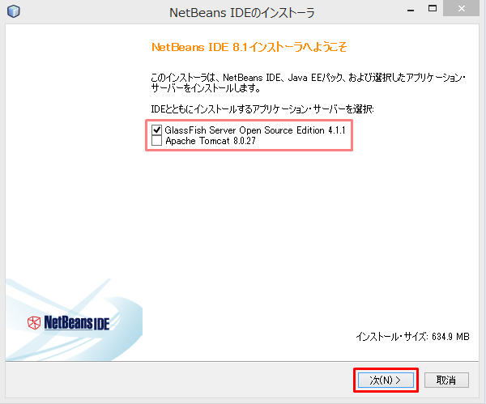
- ライセンス契約条件に同意し、次へ
-
NetBeans IDE のインストール先と、NetBeans IDE用のJDKのパスを指定して、次へ
-
NetBeans IDE用のNetBeans IDE のインストール先はデフォルトのままでも構わないが、Windows の場合は空白を避けて
C:\opt\NetBeans8.1のようにすることを推奨 -
JDK のパスは先にインストールした JDK のパスを指定する
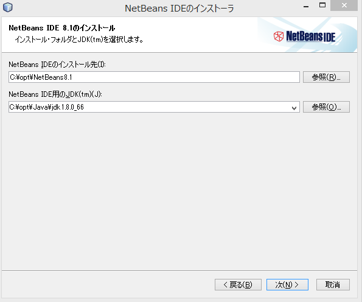
-
GlassFish のインストール先とGlassFishアプリケーションサーバー用の JDK のパスを指定して次へ
-
GlassFish のインストール先は、Windows の場合は空白を避けて、
C:opt\Java\glassfish-4.1.1のようにすることを推奨 -
GlassFishアプリケーションサーバー用の JDK のパスは先にインストールした JDK のパスを指定する

-
NetBeans IDE用のNetBeans IDE のインストール先と GlassFish のインストール先を確認し、インストール開始
-
「更新の確認」はチェックを入れて有効にしておくことを推奨
-
数分後、インストール完了。スタートメニューなどから起動を確認
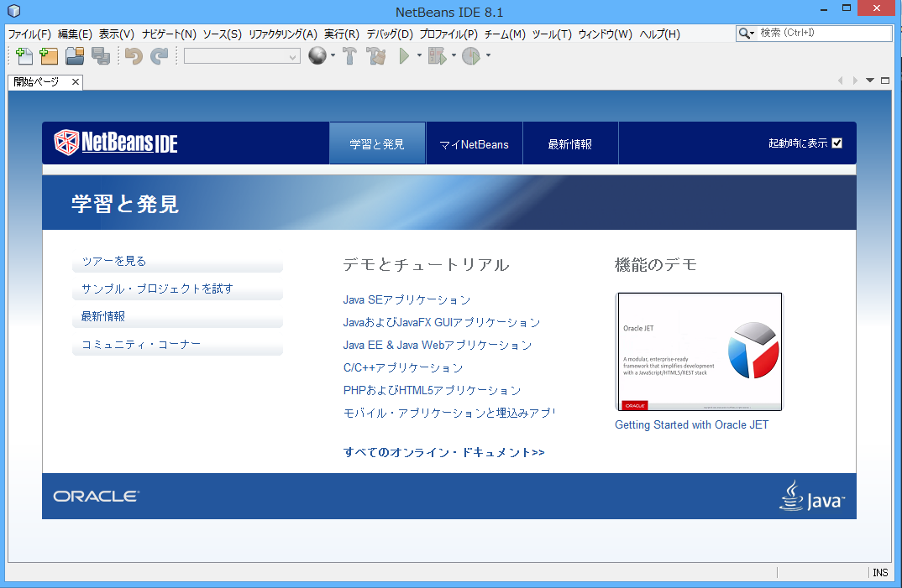
Java Web アプリケーションの作成と動作確認
参考: Getting Started with Contexts and Dependency Injection and JSF 2.x - NetBeans IDE Tutorial
試しに、新しく Java Web アプリケーションを作成してみます。
- メニューバーの「ファイル」から「新規プロジェクト...」を選択
- カテゴリ「Java Web」から「Webアプリケーション」を選択して次
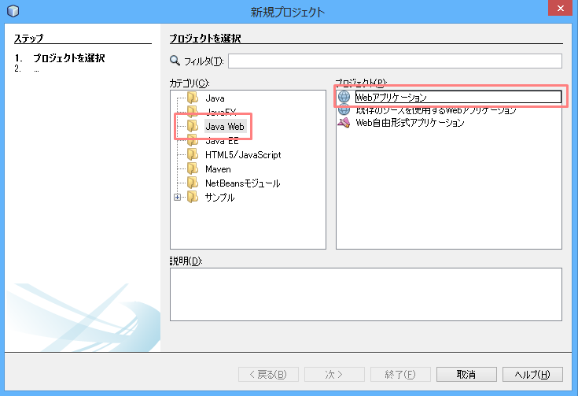
- プロジェクト名とプロジェクトの場所を入力して次
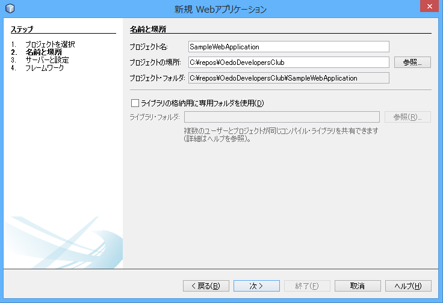
- サーバーと設定を以下のように選択し、次
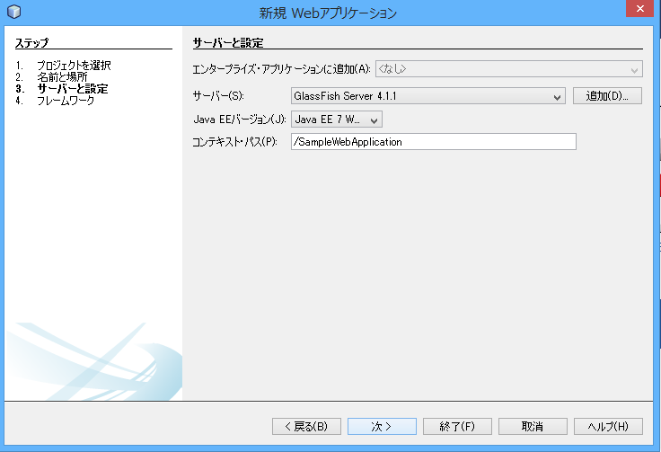
-
フレームワークは JavaServer Faces を選択し、デフォルトの構成のまま、終了
-
JPA の実装としては GlassFish サーバで EclipseLink がデフォルトで提供されるため、Hibernate は不要
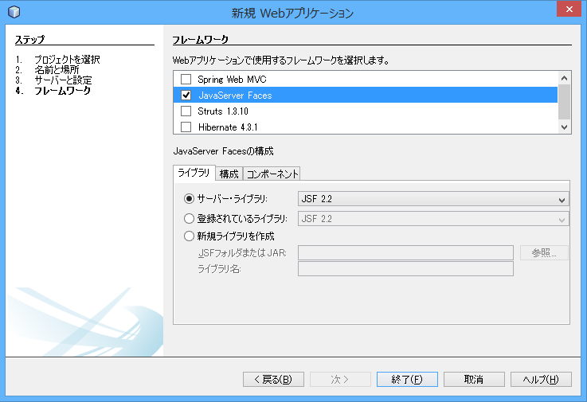
- プロジェクトの作成が完了したら、ツールバーの再生マークのボタンをクリックし、サーバ(GlassFish Server)を起動させる
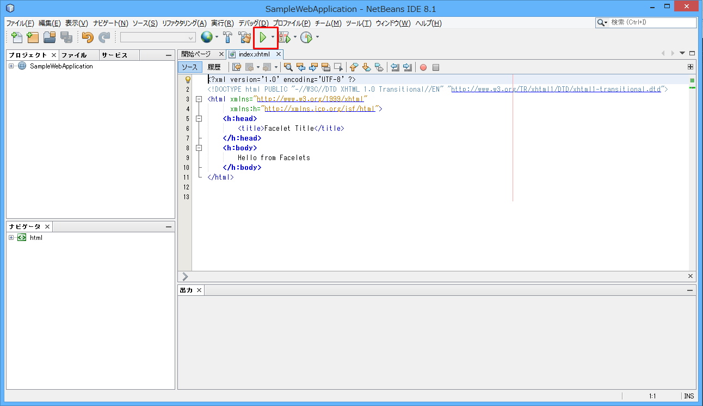
- サーバの起動が完了したら、自動で既定のブラウザが起動し、index ページが表示される
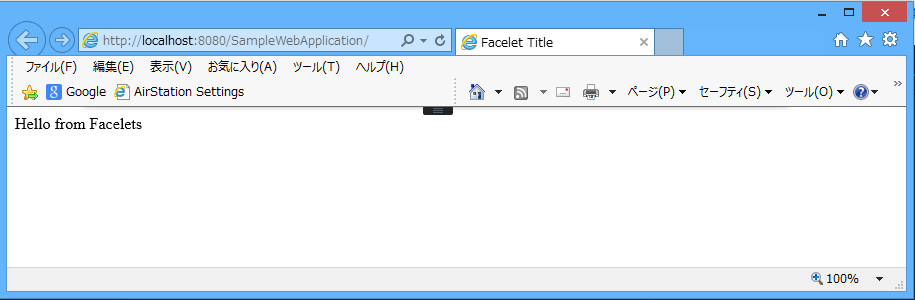